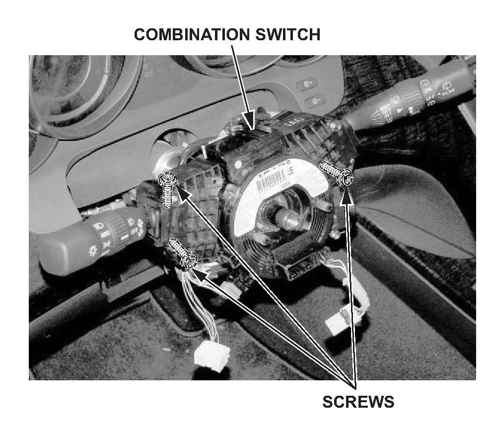
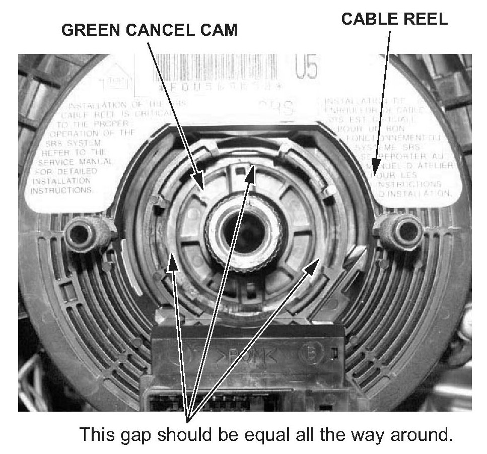
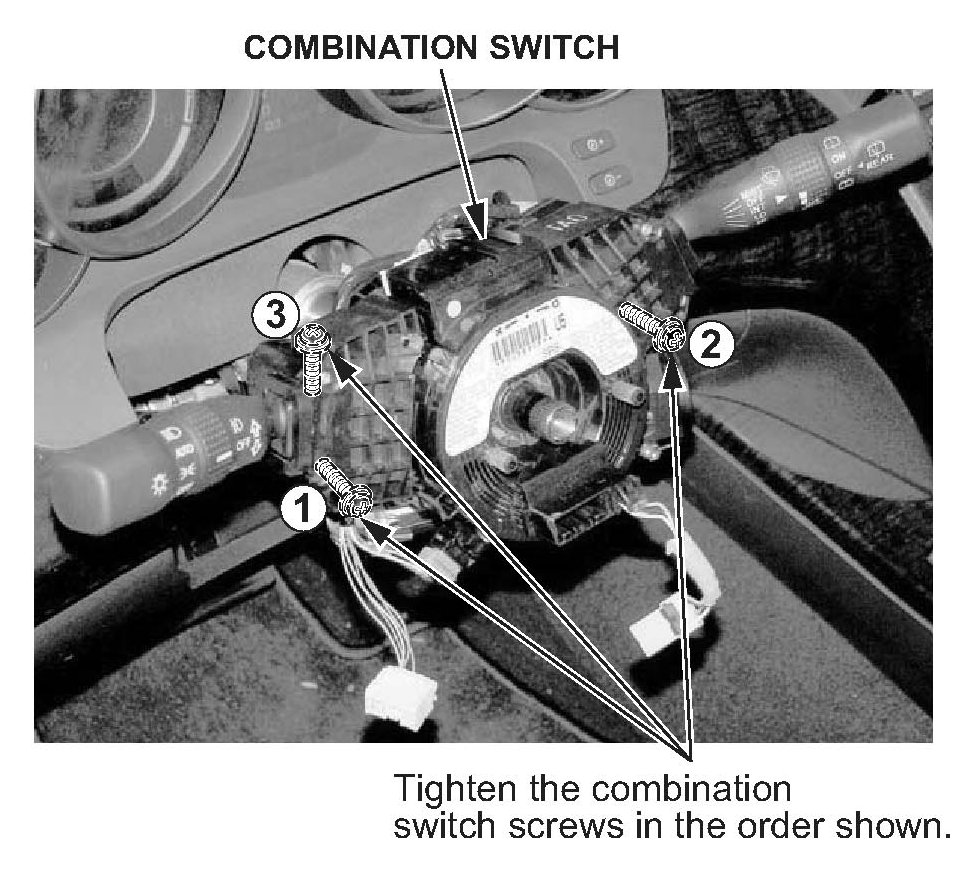

Steering - Clicking Noise When Turning Steering Wheel
07-002January 16, 2007
Applies To:
2007 MDX- From VIN 2HNYD....7H500001 thru 2HNYD....7H502196
Clicking When Turning the Steering Wheel
SYMPTOM
You hear a clicking sound when turning the steering wheel to the left or to the right.
PROBABLE CAUSE
The combination switch assembly is misaligned.
CORRECTIVE ACTION
Realign the combination switch assembly.
WARRANTY CLAIM INFORMATION
In warranty:
The normal warranty applies.
Operation Number: 5103A1
Flat Rate Time: 0.7 hour
Failed Part: P/N 35251-STX-A01
Defect Code: 07406
Symptom Code: 04201
Template ID: 07-002A
Skill Level: Repair Technician
Out of warranty:
Any repair performed after warranty expiration may be eligible for goodwill consideration by the District Parts and Service Manager or your Zone Office. You must request consideration, and get a decision, before starting work.
REPAIR PROCEDURE
NOTE:
SRS components are located in the steering wheel and column. Review the SRS component locations and the precautions and procedures before doing this repair.
1. With the key still in the ignition switch, adjust the steering wheel to the lowest position, and pull/ telescope it all the way out. Remove the ignition key.
2. Remove the steering wheel:
^ Refer to page 17-22 of the 2007 MDX Service Manual or
^ Online, enter keyword STEER, and select
Steering Wheel Removal from the list.
NOTE:
Always use a steering wheel puller to avoid damaging the steering wheel.
3. Remove the upper and lower steering column covers:
^ Refer to page 17-25 of the service manual, or
^ Online, enter keyword STEER, and select
Steering Column Cover Removal/Installation from the list.
NOTE:
There is no need to remove the cable reel.

4. Loosen the three screws holding the combination switch.

5. Position the combination switch so that the gap between the combination switch and the green cancel cam is equal all the way around.

6. Hold the combination switch while tightening the three screws securing the combination switch in the following order: screw # 1, screw # 2, and then screw # 3.
7. Temporarily install the steering wheel, and confirm that the noise is gone. If needed, readjust the combination switch. Remove the steering wheel.
8. Reinstall the upper and lower steering column covers:
^ Refer to page 17-25 of the service manual, or
^ Online, enter keyword STEER, and select Steering Column Cover Removal/Installation from the list.
9. Reinstall the steering wheel:
^ Refer to page 17-24 of the service manual, or
^ Online, enter keyword STEER, and select Steering Wheel Installation from the list.
10. Do the steering column position memorization:
^ Refer to page 17-28 of the service manual, or
^ Online, enter keyword STEER, and select Steering Column Position Memorization from the list.

Disclaimer